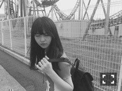

| 2015/09 06 Sun | 2つの我。664回目 |
おひさびさです＼(^o^)／
メールもお久しぶりだったので、
朝からいっぱい送ったよー
届いたかなー？
今月号のMdNでは
カバン作家のカガリユウスケさんの
アトリエにお邪魔しました。
やっと手に入れた...
と泣いた思い出のある
都市型迷彩の財布を愛用しています。
この壁のような質感を
どう作ってるのか
ずっと知りたかったので、
取材できてとても嬉しかった！
気さくな方＼(^o^)／
今回の取材で
壁への愛が伝わりました。
壁友になった証の？
さびてんねんはいつか使います。
遂にサビまで到達しました、と
永戸さんに報告したい。
カガリさんの作品には
これからもお世話になります。
よろしくお願いします。
次号のMdNもお楽しみにっ
9月5日 MdN
9月15日 EX大衆
9月19日 OVERTURE
富山旅行の図

世界遺産の五箇山を堪能しました。
朝6時に起きて散歩をして、
空気の入れ替えをしました。
行動なおばあちゃんなようですが
綺麗な空気に肌も若返った！
気がする！
1日目は土砂降りの雨、
でも次の日は晴天。
人々とふれ合って
美味しいご飯食べて
バス乗って温泉入って長話して
チューリップ見に来たけど枯れてて
でも、ヒマワリは咲いてて
よく歩いたね。
富山大好きになりました。
さゆがチケットも予約も
全部やってくれた(T . T)ありがとう
そこまで迷子にならなかったよ！
わたしたち！
......
M-ON! SPECIAL
「乃木坂46」〜太陽ノック!!!〜
Vol.1が昨日放送されました。
告知が遅れてしまってすみません！
個人PV特集になります。
特典映像を放送するのは地上波初！
とてもありがたいことです。
1stから今までの個人PVを厳選して
若月、さゆ、みなみ、私の4人で
解説してゆきました。
9月23日 16:00〜18:00
にリピート放送されますので、
見逃した方はぜひご覧ください！
そして、Vol.2もお楽しみに＼(^o^)／
初回 10月18日 21:00〜23:00
リピート 10月23日 19:00〜21:00
......
遊園地行ったよ


親友からドイツのお土産で
懐中時計ネックレスもらった〜
素敵。
楽し過ぎて笑いながら
ジェットコースター乗ってた
のちに青ざめた（＾∇＾）
前日は買い物して、
いろんなデザイナーさんと
お話しする機会がありました。
いろいろ勉強になるし、
聞いてて楽しい！すき！
そして昨日は撮影会したよって
工場地帯歩いたりして、
良い感じでした。
休みが充実し過ぎて
休みになったのかな？
でも、相当リフレッシュできたし、
休みなく動く準備はできてる！
引き締めてがんばります！
まりか
コメント(590)
2015/09/06 22:54